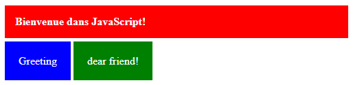
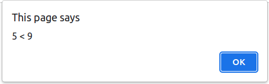

Ouvrir la page dans le navigateur. Puis ouvrir l'outil de développement (DevTools).
Résultat du code JavaScript
Activité 2
Créer un fichier JavaScript nommé jscript01.js contenant le code suivant :
console.log("Hello from console.log inside an external file");
Intégrer ce code dans le fichier javascript01.html à l'aide de la balise :
<script src="jscript01.js"></script>
Recharger la page dans le navigateur, appuyer F5.
Résultat du code JavaScript dans un fichier externe
Affichage
JavaScript permet d'afficher les résultats des traitements de plusieurs façons :
Dans la console de l'outil de développement (Devtools),
Dans une boîte d'alerte,
Dans le document HTML,
Dans le DOM,
Dans un composant d'un formulaire,
Affichage : console.log
L'affichage dans la console sert à débugger les scripts JavaScript. Il sert principalement à
traquer les éventuelles erreurs dans un script.
Exemple
<script>
// Calcul de l'hypoténus d'un triangle rectangle
let a = 3;
let b = 4;
// L'hypoténus est calculé en utilisant la formule :
// c = racine(a^2+b^2)
let c = Math.sqrt(a + a);
// c doit être égal à 5
console.log("a = ", a, " - b = ", b, " - c = ", c);
</script>
Résultat
Débuggage d'un script qui contient des erreurs
Travail demandé
Créer un fichier HTML nommé javascript02.html.
Copier le code précédent puis le tester dans la console du navigateur.
Corriger l'erreur.
Affichage : boîte d'alerte (alert)
La boîte d'alerte alert surgit afin d'attirer l'attention de l'utilisateur et de l'alerter
sur une exception dans le script.
Exemple
On suppose qu'un utilisateur a tapé deux mots de passes différents dans les champs suivants. La page doit
l'alerter de son erreur.
Confirmation d'un mot de passe
Message d'erreur
Le message précédent est obtenu en utilisant la fonction alert("Message").
alert("Les mots de passes sont différents!");
Travail demandé
Copier le code JavaScript précédent dans la console puis appuyer sur la touche Enter.
Afficher une boîte d'alerte à l'aide de la console
Affichage : Document HTML (document.writeln)
Il est possible d'afficher le résultat d'un traitement directement dans la page en utilisant la fonction
document.writeln("message");. Cette fonction permet aussi d'insérer un code HTML dans la page et
de
l'exécuter.
Exemple
Code HTML
<script>
let a = 5;
let b = 6;
document.writeln("<p>", a, "+", b, "=", a + b, "</p>");
document.writeln("<p>", a, "*", b, "=", a * b, "</p>");
document.writeln("<p>", a, "-", b, "=", a - b, "</p>");
document.writeln("<p>", a, "/", b, "=", a / b, "</p>");
</script>
Une page web possède une structure formée par ses éléments appelée DOM. Le langage JavaScript offre plusieurs
fonctions pour accéder au DOM, notamment :
document.getElementById("id") : retrourne une référence à un élément de la page connaissant
son
id.
document.querySelector("css_selector") : retourne une référence au premier élément de la page
en fonction du sélecteur CSS donné.
L'obtention d'une référence à un élément a pour objectif de manipuler ses propriétés à l'aide de JavaScript.
On peut, par exemple, récupérer la référence d'un champ dans un formulaire à l'aide de son #elem_idconst elem = document.getElementById("elem_id"). Puis, on peut soit modifier sa valeur en
utilisant
: elem.value = "Une nouvelle valeur";.
On peut, même, changer le contenu d'un élément en utilisant la propriété :
elem.innerHTML = "<p>Code HTML</p>";.
Ajouter un champ intervalle type="range" avec lequel l'utilisateur peut sélectionner le
nombre d'articles à acheter de 1 à 7. La valeur par défaut du champ est 3.
Ajouter un code JavaScript qui affiche la valeur de ce dernier champ.
Résultat à obtenir
Exemple 2 : Modification du contenu d'un élément
Code HTML
<div id="message"></div>
<script>
// récéupérer une référence du div
const msg = document.getElementById("message");
// ajouter un contenu à ce div
msg.innerHTML = '<p class="erreur">Bienvenue dans JavaScript!</p>';
</script>
Copier les codes HTML et CSS de l'exemple précédent dans un fichier HTML nommé :
javascript07.html
Tester dans un navigateur.
Ajouter la balise suivante dans la partie HTML du document :
<div id="greeting"></div>
Ajouter le code JavaScript nécessaire pour obtenir l'affichage suivant :

Résultat à obtenir
Affichage : Formulaire
Un formulaire permet de recuillir les information de l'utilisateur, pour les soumettre à un serveur ou pour
les manipuler localement à l'aide de JavaScript.
En récupérant la référence d'un composant du formulaire à l'aide de
const elem = document.getElementById("elemid"), il est possible de modifier sa valeur via
l'instruction : elem.value = "Nouvelle valeur";
Modifier le code précédent pour qu'il calcule : a + b + c, a - b - c, a * b * c ou a / b / c.
Résultat à obtenir
Variables / Constantes
On peut déclarer des variables en JavaScript en utilisant les mots clés var et let.
Les variables peuvent être initialisées lors de leurs déclaration. Une variable non initialisée contient la
valeur : undefined.
Le nom d'une variable doit commencer par une lettre ou par le caractère de soulignement (_). Les caractères
suivants peuvent être des lettres, des chiffres et/ou le caractère de soulignement.
Contrairement à une variable dont la valeur peut changer au cours de l'exécution du script, la valeur d'une
constante reste inchangée après sa déclaration.
Remarque 1 : Il est vivement conseillé d'utiliser le mot clé
let. Le mot clé var est à éviter.
Remarque 2 : JavaScript est sensible à la casse.
Exemple 1 : Déclaration d'une variable
// Déclaration de variables sans initialisation
var x;
let y;
// Déclaration de variables avec initialisation
var nom = "Ahmed";
let age = 16;
console.log(x, y);
console.log(nom, age);
Résultat
Déclaration des variables
Exemple 2 : Sensibilité à la casse
let x = 6;
console.log(X); // Affiche une erreur : X is not defined
console.log(x);
Résultat
Les noms des variables sont sensibles à la casse
Exemple 3 : Constantes vs Variables
// variable
let x = 4;
x = x + 2;
x = x * 5;
console.log(x);
// constante
const y = 5;
y = y + 2;
console.log(y);
Résultat
Constante vs Variable
Travail demandé
Utiliser la console pour tester les trois exemples précédents.
Types prédéfinis
JavaScript supporte six classes de variables prédéfinis :
number : Pour les nombres entiers et réels,
string : Pour les chaînes de caractères,
boolean : Pour les expressions qui renvoient true ou false,
object : Pour les tableaux et les objets définis par l'utilisateur,
function : Pour les fonctions,
undefined : Pour les variables déclarées sans initialisation.
Le mot clé typeof v retourne le type de v. v est soit une constante ou une variable.
Tester les commandes précédentes dans la console du navigateur.
Les opérateurs
Les opérateurs sont classés en catégories :
Les opérateurs de calcul
Addition
Soustration
Multiplication
Division
Modulo
c = a + b;
d = a - b;
e = a * b;
f = a / b;
g = a % b;
Exemple 1
let a = 15;
let b = 6;
let c = a + b; console.log(c); // 21
let d = a - b; console.log(d); // 9
let e = a * b; console.log(e); // 90
let f = a / b; console.log(f); // 2.5
let g = a % b; console.log(g); // 3
Les opérateurs assosiatifs
Il s'agit d'une forme plus courte des opérateurs arithmétiques.
Addition
Soustration
Multiplication
Division
Modulo
a += b; Equivalente à : a = a + b;
a -= b; Equivalente à : a = a - b;
a *= b; Equivalente à : a = a * b;
a /= b; Equivalente à : a = a / b;
a %= b; Equivalente à : a = a % b;
Exemple 2
let a = 15;
let b = 6;
a += b; console.log(a); // 15 + 6 = 21
a -= b; console.log(a); // 21 - 6 = 15
a *= b; console.log(a); // 15 * 6 = 90
a /= b; console.log(a); // 80 / 6 = 15
a %= b; console.log(a); // 15 % 6 = 3
Les opérateurs d'incrémention
Il s'agit d'une forme plus courte des opérateurs arithmétiques.
let a = 8;
let b = "8";
let c = 9;
// Supérieur
console.log(c, ">", a, "=>", c > a); // true
console.log(b, ">", a, "=>", b > a); // false
// Supérieur ou égal
console.log(c, ">=", a, "=>", c >= a); // true
console.log(a, ">=", b, "=>", a >= b); // true
// Inférieur
console.log(c, "<", a, "=>", c < a); // false
console.log(b, "<", a, "=>", b < a); // false
// Inférieur ou égal
console.log(c, "<=", a, "=>", c <= a); // false
console.log(a, "<=", b, "=>", a <= b); // true
// Même valeur
console.log(c, "==", a, "=>", c == a); // false
console.log(b, "==", a, "=>", b == a); // true
// Valeur différente
console.log(c, "!=", a, "=>", c != a); // true
console.log(b, "!=", a, "=>", b != a); // false
// Même type et même valeur
console.log(c, "===", a, "=>", c === a); // false
console.log(b, "===", a, "=>", b === a); // false
// Type ou valeur différents
console.log(c, "!==", a, "=>", c !== a); // true
console.log(b, "!==", a, "=>", b !== a); // true
Les opérateurs logiques
Et logique
Ou logique
Non logique
a && b
a || b
!a
Exemple 5
let a = 8;
let b = 6;
let c = 4;
console.log(a, ">", b, "&&", b, ">", c, (a > b && b > c)) // true
console.log(a, "<", b, "||", b, ">", c, (a < b || b > c)) // true
console.log("!(", a, ">", b, ")", !(a > b)) // false
Les entrées
Il est possible de récupérer les données de l'utilisateur en utilisant diverses méthodes :
Depuis un formulaire en utilisant la propriété : elem.value d'un champ.
Depuis une boîte d'invite (prompt).
Depuis une boîte de confirmation.
Exemple 1 : récupérer une donnée depuis un champ d'un formulaire
Récupération des données à partir d'un champ d'un formulaire
Exemple 2 : récupérer une donnée à partir d'une boîte d'invite
<div id="operation"></div>
<script>
const op = document.getElementById("operation");
let a = prompt("Donner a ?", "5");
let b = prompt("Donner b ?", "7");
let s = a + b;
op.textContent = a + " + " + b + " = " + s;
</script>
Résultat
Boîte d'invite, demander la valeur de a et bRésultat du script
Exemple 2 : récupérer une donnée à partir d'une boîte d'invite
<div id="operation"></div>
<script>
const op = document.getElementById("operation");
let a = prompt("Donner a ?", "5");
let b = prompt("Donner b ?", "7");
let s = a + b;
op.textContent = a + " + " + b + " = " + s;
</script>
Résultat
Boîte d'invite, demander la valeur de a et bRésultat du script
Exemple 3 : récupérer une confirmation
<script>
const reponse = confirm("Voulez-vous supprimer cet élément ? ");
if (reponse) {
alert("L'élément a été supprimé !");
} else {
alert("Vous avez annulé l'opération !");
}
</script>
Résultat
Exemple d'utilisation d'une boîte de confirmation
Exemple 3 : récupérer une confirmation
<script>
const reponse = confirm("Supprimer cet élément ? ");
if (reponse) {
alert("L'élément a été supprimé !");
} else {
alert("Vous avez annulé l'opération !");
}
</script>
Résultat
Exemple d'utilisation d'une boîte de confirmation
Structures conditionnelles
JavaScript offre une variété de structures conditionnelles :
L'instruction if
L'instruction switch
L'opérateur ternaire (cond) ? val1 : val2
L'instruction if
Forme générale
if (condition) {
// traitement
} else {
// autre traitement
}
Exemple
<script>
let a = prompt("Donner a ? ", "0");
let b = prompt("Donner b ? ", "0");
let res = "";
a = parseInt(a);
b = parseInt(b);
if (a > b) {
res = a + " > " + b;
} else if (a < b) {
res = a + " < " + b;
} else {
res = a + " = " + b;
}
alert(res);
</script>
Résultat

Exemple d'exécution du script
Exemple
<script>
let a = prompt("Donner a ? ", "0");
let b = prompt("Donner b ? ", "0");
let res = "";
a = parseInt(a);
b = parseInt(b);
if (a > b) {
res = a + " > " + b;
} else if (a < b) {
res = a + " < " + b;
} else {
res = a + " = " + b;
}
alert(res);
</script>
Résultat
Exemple d'exécution du script
Travail demandé
Copier le script précédent dans un fichier HTML nommé javascript09.html.
Tester dans le navigateur avec des valeurs valides.
Tester, maintenant, avec des valeurs invalides ou en cliquant sur Annuler. Quelle est la valeur
de a lorsque vous taper par exemple votre nom au lieu d'une valeur numérique ?
Corriger le comportement du script pour qu'il affiche "Données manquantes." lorsque
les données sont invalides.
L'instruction switch
Forme générale
switch (variable) {
case valeur1:
// traitement
break;
case valeur2:
// autre traitement
break;
default:
// traitement par défaut
}
Exemple
let j2 = Math.floor(Math.random() * 3), cj2;
let j1, cj1;
let g, res;
switch (j2) {
case 0: cj2 = "Pierre"; break;
case 1: cj2 = "Feuille"; break;
case 2: cj2 = "Ciseaux"; break;
default: cj2 = "Aucun";
}
j1 = j2
cj1 = cj2;
res = "Partie nulle";
alert(cj1 + " contre " + cj2 + " => " + res);
Résultat
Résultat du script
Exemple
let j2 = Math.floor(Math.random() * 3), cj2;
let j1, cj1;
let g, res;
switch (j2) {
case 0: cj2 = "Pierre"; break;
case 1: cj2 = "Feuille"; break;
case 2: cj2 = "Ciseaux"; break;
default: cj2 = "Aucun";
}
j1 = j2
cj1 = cj2;
res = "Partie nulle";
alert(cj1 + " contre " + cj2 + " => " + res);
Résultat du script
Travail demandé
Copier le code précédent dans un fichier HTML nommé javascript01.html.
Tester dans le navigateur. Quel jeu essaie-t-on d'implémenter ?
Compléter ce jeu tout en utilisant l'instruction switch.
Pour déterminer le gagnant sachant les choix des deux joueurs j1 et j2, on peut
utiliser la formule : g = (j1 - j2 + 3) % 3; qui renvoie :
0 : si la partie est nulle,
1 : si le premier joueur gagne,
2 : si le premier joueur perd.
L'opérateur ternaire
Forme générale
(condition) ? valeur1 : valeur2
Exemple
let v1 = Math.floor(Math.random() * 2);
let v2 = Math.floor(Math.random() * 2);s
let res = (v1 == v2) ? "Egaux" : "Différents";
alert(v1 + " == " + v2 + " ? " + res);
Résultats
Résultat de la comparaison de deux nombres choisis au hasard
Travail demandé
Copier le code précédent dans un fichier HTML nommé javascript11.html.
Tester dans le navigateur.
Modifier le script pour qu'il sélectionne deux nombres de deux chiffres, puis affiche s'ils possèdent le
même chiffre en utilisant l'opérateur ternaire.
Exemple : 12 et 22 possèdent un même chiffre 2. 15 et 25 possèdent un même chiffre.
Structures itératives
On utilise les structures itératives lorsqu'on veut répéter un traitement plusieurs fois. JavaScript met à
notre disposition les strucures suivantes :
for : lorsque le nombre de répétitions est connu à l'avance.
while et do ... while : lorsque le nombre de répétitions dépend d'une condition.
Boucle for
Forme générale
for (initialisation; condition; increment) {
// traitement
}
Exemple
Afficher les nombres pairs entre 0 et 15.
<p><b>Nombres pairs :</b>
<script>
for (let i = 0; i < 16; i++) {
if (i % 2 == 0) {
document.writeln(i);
}
}
</script>
</p>
Résultat
Affichage des nombres pairs dans l'intervalle 0 à 15
Exemple
Afficher les nombres pairs entre 0 et 15.
<p><b>Nombres pairs :</b>
<script>
for (let i = 0; i < 16; i++) {
if (i % 2 == 0) {
document.writeln(i);
}
}
</script>
</p>
Résultat
Affichage des nombres pairs dans l'intervalle 0 à 15
Travail demandé
Copier le code précédent dans un fichier HTML nommé : javascript13.html.
Tester dans le navigateur.
Insérer dans le code précédent un script qui a pour rôle d'afficher tous les nombres de deux chiffres dont
le chiffre des dizaines est multiple du chiffre des unités ou le contraire.
Nombres dont le chiffres des dizaines est multiple ou diviseur du chiffre des unités
Boucle while
Forme générale
while (condition) {
// traitement
}
Exemple
Calculons le PGCD en utilisant la formule d'Euclide.
PGCD(a, b) = PGCD(b, a mod b); si b ≠ 0 PGCD(a, b) = a; si b = 0
<p><b>Calcul du PGCD : </b>
<script>
let a = parseInt(prompt("Donner a ? "));
let b = parseInt(prompt("Donner b ? "));
/* Calcul du PGCD : Algorithme d'Euclide */
let a1 = a, b1 = b;
while (b1 != 0) {
let r = a1 % b1;
a1 = b1;
b1 = r;
}
document.writeln("PGCD(", a, ", ", b, ") = ", a1);
</script>
</p>
Résultat
Résultat du calcul de PGCD pour a = 25 et b = 35
Travail demandé
Copier le code précédent dans le fichier HTML nommé javascript13.html.
Tester dans le navigateur.
Ajouter le code qui permet de calculer le PPCM de a et b en utilisant la méthode des additions. Qui
consiste, comme le montre l'exemple dans le tableau suivant, à incrémenter la valeur de a de
a tant qu'elle n'est pas divisible par b.
a
b
a mod b ≠ 0
35 70 105
15 15 15
true true false
Résultat du calcul du PPCM(35, 15)
Exemple
Calculons le PGCD en utilisant la formule d'Euclide.
PGCD(a, b) = PGCD(b, a mod b); si b ≠ 0 PGCD(a, b) = a; si b = 0
<p><b>Calcul du PGCD : </b>
<script>
let a = parseInt(prompt("Donner a ? "));
let b = parseInt(prompt("Donner b ? "));
/* Calcul du PGCD : Algorithme d'Euclide */
let a1 = a, b1 = b;
while (b1 != 0) {
let r = a1 % b1;
a1 = b1;
b1 = r;
}
document.writeln("PGCD(", a, ", ", b, ") = ", a1);
</script>
</p>
Résultat
Résultat du calcul de PGCD pour a = 25 et b = 35
Travail demandé
Copier le code précédent dans le fichier HTML nommé javascript13.html.
Tester dans le navigateur.
Ajouter le code qui permet de calculer le PPCM de a et b en utilisant la méthode des additions. Qui
consiste, comme le montre l'exemple dans le tableau suivant, à incrémenter la valeur de a
de
a tant qu'elle n'est pas divisible par b.
a
b
a mod b ≠ 0
35 70 105
15 15 15
true true false
Résultat du calcul du PPCM(35, 15)
Boucle do ... while
Cette boucle est semblable à sa sœur ainée while. La seule diffférence est que le
traitement est exécuté au moins une fois avant que la condition n'est évaluée.
Forme générale
do {
// traitement
} while (condition);
Exemple
Choisir un chiffre au hasard. Puis Chercher un nombre de deux chiffres qui se termine par le chiffre
choisi.
<script>
let a = Math.floor(Math.random() * 10);
let b, u;
document.writeln("<p>Cherchons un nombre ayant un chiffre d'unités = ", a, "</p>")
do {
b = Math.floor(Math.random() * 90) + 10;
u = b % 10;
if (u == a) {
document.writeln(b, " Accepté");
} else {
document.writeln(b, " Rejeté");
}
document.writeln("<br>");
} while (u != a);
</script>
Résultat
Choisir un chiffre au hasard. Puis Chercher un nombre de deux chiffres qui se termine par le
chiffre choisi.
Exemple
Choisir un chiffre au hasard. Puis Chercher un nombre de deux chiffres qui se termine par le chiffre
choisi.
<script>
let a = Math.floor(Math.random() * 10);
let b, u;
document.writeln("<p>Cherchons un nombre ayant un " +
"chiffre d'unités = ", a, "</p>")
do {
b = Math.floor(Math.random() * 90) + 10;
u = b % 10;
if (u == a) {
document.writeln(b, " Accepté");
} else {
document.writeln(b, " Rejeté");
}
document.writeln("<br>");
} while (u != a);
</script>
Résultat
Choisir un chiffre au hasard. Puis Chercher un nombre de deux chiffres qui se termine par le
chiffre choisi.
Travail demandé
Copier le code précédent dans un fichier HTML nommé : javascript14.html.
Tester dans le navigateur.
Modifier le script comme suit :
On choisit deux chiffres au hasard a et b.
On cherche un nombre de quatre chiffres au hasard c contenant les deux chiffres
a et b.
Exemple du résultat attendu
Fonctions
L'utilisation des fonctions permet de réduire la complexité d'un problème en le décomposant en des
sous-problèmes moins compliqués.
Les fonctions en JavaScript sont des citoyens de première classe. Elle peut être déclarée comme une variable
et passée en tant que paramètre à une autre fonction. Une fonction peut-être déclarée de
plusieurs façons :
À l'aide du mot clé : function.
Comme une variable ou constante à l'aide de const, let ou var.
Comme une fonction anonyme.
Déclaration
Forme générale
/* fonction ordinaire */
function nom_fonction(par1, par2, ..., parN) {
// traitement
/* La fonction peut retourner, ou non, un résultat à son appelant */
[return résultat;]
}
/* fonctions anonymes */
const nom_fct2 = function (par1, par2, ..., parM) {
// traitement
[return resultat;]
};
const nom_fct3 = (par1, par2, ..., parM) => résultat;
Exemple
L'exemple suivant présente plusieurs façons pour décalrer une fonction.
let a = 5, b = 10;
/* Déclaration d'une fonction : Méthode 1 */
function somme(a, b) {
return a + b;
}
document.writeln("<p>", a, "+", b, "=", somme(a, b), "</p>");
/* Déclaration d'une fonction : Méthode 2 */
const produit = function (a, b) {
return a * b;
}
document.writeln("<p>", a, "*", b, "=", produit(a, b), "</p>");
/* Déclaration d'une fonction : Méthode 3 */
const alea = (a, b) => {
return Math.floor(Math.random() * (b - a)) + a;
}
document.writeln("<p>alea(", a, ", ", b, ") = ", alea(a, b), "</p>");
// Le premier paramètre de calc est une fonction
function calc(fn, a, b) {
return fn(a, b);
}
/* Déclaration d'une fonction : Méthode 4 */
const res = calc((x, y) => x / y, a, b);
document.writeln("<p>", a, "/", b, "=", res, "</p>");
Résultat
Différentes méthodes pour déclarer une fonction
Travail demandé
Copier le code précédent dans un fichier HTML nommé javascript15.html.
Tester dans un navigateur.
Ecrire une fonction max(a, b) qui calcule le maximum de deux nombres a et
b. Puis, l'appeler.
Évènements
Présentation
JavaScript est un langage évènementiel, chaque nœud du DOM génère des évènements. Un évènement est
déclenché, automatiquement, par le navigateur lorsque :
Le contenu de la page est chargé.
L'utilisateur clique sur un bouton dans la page.
L'utilisateur modifie le contenu d'un champ dans un formulaire.
L'utilisateur glisse un objet au dessus d'un élément.
etc.
JavaScript permet d'écouter un évènement et d'y attacher, par conséquence, un
gestionnaire d'évènement.
Réponse à un évènement
Il est possible de répondre aux évènements de plusieurs manières. Par exemple, pour répondre au clic d'un
bouton on peut écrire :
Exemple 1
Définir l'attribut onclick de la balise <button>. Le clic sur ce bouton
exécute le code JavaScript.
Récupérer la référence du bouton à l'aide de document.getElementById, puis attacher
l'évènement
onclick dans JavaScript.
<button id="bouton" type="button">Cliquez-moi</button>
<script>
const bouton = document.getElementById("bouton");
bouton.onclick = () => {
alert("You are the best of the best!");
};
</script>
Exemple 4
Récupérer la référence du bouton à l'aide de document.getElementById, puis utiliser la méthode
addEventListener pour attacher une fonction à l'évènement click.
<button id="btn-2" type="button">Cliquez-moi</button>
<script>
const btn2 = document.getElementById("btn-2");
btn2.addEventListener("click", () => {
alert("Wish you success and happiness!");
});
</script>
Exemple 3
Récupérer la référence du bouton à l'aide de document.getElementById, puis attacher
l'évènement
onclick dans JavaScript.
<button id="bouton" type="button">Cliquez-moi</button>
<script>
const bouton = document.getElementById("bouton");
bouton.onclick = () => {
alert("You are the best of the best!");
};
</script>
Exemple 4
Récupérer la référence du bouton à l'aide de document.getElementById, puis utiliser la
méthode
addEventListener pour attacher une fonction à l'évènement click.
<button id="btn-2" type="button">Cliquez-moi</button>
<script>
const btn2 = document.getElementById("btn-2");
btn2.addEventListener("click", () => {
alert("Wish you success and happiness!");
});
</script>
Évènement click
L'évènement click est déclenché lorsqu'on clique sur un élément du DOM.
Forme générale
elem est une référence à un élément du DOM.
e.preventDefault() permet d'annuler l'effet de l'évènement et d'arrêter sa propagation.
elem.addEventListener("click", (e) => {
/* Traitement */
/* Arrêter la propagation de l'évènement */
// e.preventDefault();
});
Exemple
<p><label><input type="checkbox" name="defi" id="defi"> Cochez-moi si vous le pouvez 😀.</label></p>
<script>
const defi = document.getElementById("defi");
defi.addEventListener("click", (e) => {
alert("Désolé! Essayez encore une fois!");
e.preventDefault();
});
</script>
Travail demandé
Copier le code précédent dans un fichier HTML nommé : javascript17.html
Tester dans le navigateur.
Modifier le code pour qu'il retrouve son fonctionnement normal.
Modifier le code pour que le bouton soit coché au troisième clic.
Évènement change
L'évènement change est déclenché lorsque la valeur d'un champ dans un formulaire a changé.
L'exemple suivant demande à un utilisateur d'entrer son nom dans un champ de texte nom, puis
il affiche tous les changements effectués dans le div #message.
<p><input type="text" name="nom" id="nom" placeholder="Votre nom"></p>
<div id="message"></div>
<script>
const nom = document.getElementById("nom");
const msg = document.getElementById("message");
let nom_actuel = nom.value;
nom.addEventListener("change", () => {
const nouv_nom = nom.value;
msg.innerHTML += "Le nom est changé de '" + nom_actuel + "' à '" + nouv_nom + "'<br>";
nom_actuel = nouv_nom;
});
</script>
Résultat
Exemple d'exploitation de l'évènement change
Exemple
L'exemple suivant demande à un utilisateur d'entrer son nom dans un champ de texte nom,
puis
il affiche tous les changements effectués dans le div #message.
<p><input type="text" name="nom" id="nom"
placeholder="Votre nom"></p>
<div id="message"></div>
<script>
const nom = document.getElementById("nom");
const msg = document.getElementById("message");
let nom_actuel = nom.value;
nom.addEventListener("change", () => {
const nouv_nom = nom.value;
msg.innerHTML += "Le nom est changé de '" +
nom_actuel + "' à '" +
nouv_nom + "'<br>";
nom_actuel = nouv_nom;
});
</script>
Résultat
Exemple d'exploitation de l'évènement change
Travail demandé
Copier le code précédent dans un fichier HTML nommé javascript18.html
Tester dans le navigateur.
Créer un formulaire qui affiche la valeur maximale, la valeur minimale et la moyenne de deux nombres dès
que l'utilisateur finit de les taper.
Résultats attendus
Évènements focus/blur
L'évènement focus est déclenché par un champ d'un formulaire lorsque celui-ci devient
l'élément actif.
L'évènement blur est déclenché par un champ d'un formulaire perd le focus et n'est plus
l'élément actif.
Copier le code précédent dans un fichier HTML nommé javascript19.html.
Tester dans le navigateur.
La constante secret contient un nombre aléatoire de 1 à 99. Modifier le code précédent pour
qu'il affiche :
Lesser than xx si le nombre secret < xx
Greater than xx si le nombre secret > xx
Great! You guessed. It's xx!
Évènements keyup / keydown / keypress
Lorsque l'utilisateur appuie sur une touche du clavier le navigateur déclenche l'évènement
keydown suivi de l'évènement keypress. Ces deux évènement sont redéclenchés
périodiquement si l'utilisateur maintien la touche appuyée.
Une fois que l'utilisateur décide de relacher cette touche le navigateur déclenche l'évènement
keyup.
Ces évènements passent au gestionnaire d'évènement, un objet nommé par exemple ev, qui définit
les propriétés suivantes :
ev.altKey indique la touche Alt est appuyée.
ev.ctrlKey indique la touche Ctrl est appuyée.
ev.metaKey indique la touche Windows est appuyée.
ev.shiftKey indique la touche Shift est appuyée.
ev.key indique la touche du clavier appuyée.
ev.code indique le code de la touche appuyée.
ev.keyCode indique le code numérique de la touche appuyée.
Le changement de la valeur d'un champ d'un formulaire déclenche l'évènement input. Cet
évènement est déclenché à chaque fois que la valeur du champ change et ce à l'inverse de l'évènement
change qui est déclenché une seule fois lorsque l'utilisateur a fini de changer la valeur
d'un champ.